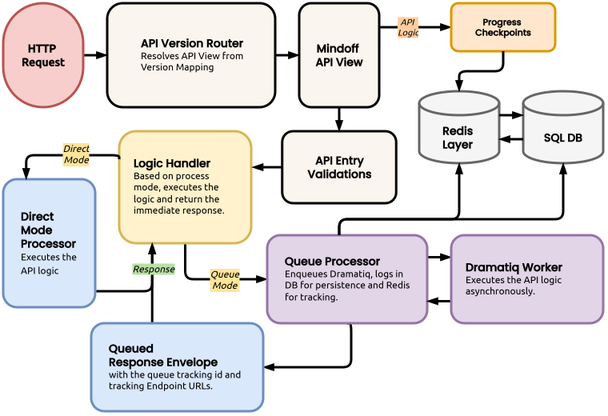

API Kit¶
The API Kit is the runtime backbone of django-mindoff. It defines how requests are routed, validated, executed, and finally returned as a consistent response envelope.
One pipeline supports both synchronous (direct) and asynchronous (queue) APIs.
For API authoring workflow and endpoint implementation examples, refer to the Developer Guide:
Architecture & Request Flow¶
At a high level, requests follow one shared path and branch only when execution starts (direct vs queue).
Flow Diagram¶

Core Runtime Components¶
APIVersionRouter: Entry point for versioned APIs. See APIVersionRouter (Deep-Dive) for runtime dispatch, cache semantics, and integration contracts.MindoffAPIMixin: Lifecycle owner for class-based APIs. It extends DRFAPIViewand treats class attributes as policy (method, auth, permissions, payload limits/schema, rate limits, process mode, queue controls).initial()runs request-time guards, and_handle_request_logic()selectsdirectvsqueue.mo_response_kit: Response assembler. It builds predictable envelopes based onresponses.csvmetadata.
APIVersionRouter (Deep-Dive)¶
APIVersionRouter is a runtime dispatcher (__call__(request, *args, **kwargs)) that resolves API version, selects a class from VERSION_MAP, and hands off execution to DRF-compatible view callables via as_view().
Runtime Dispatch Contract¶
- Version resolution:
version = kwargs.get("version") or 1. Missing/falseyversionfalls back to1. - Version map contract:
VERSION_MAPmust be a dict mapping integer version keys to class-based API views (classes exposingas_view()and typically inheritingMindoffAPIMixin). - Invalid version contract: when a version key is absent, router returns
mo_response_kit.json_response(...)with: message.code = "INVALID_API_VERSION"data.available_versions = list(VERSION_MAP.keys())- Runtime handoff: on valid match, router calls
view_class.as_view()(request, *args, **kwargs), which transitions execution into the target class-based API lifecycle (MindoffAPIMixin.dispatch()/initial()flow when using Mindoff APIs).
View Callable Cache Semantics (MINDOFF_USE_VIEW_CACHE)¶
- Cache disabled (
False, default):as_view()is called on every request. - Cache enabled (
True): router memoizes one callable per version in instance-level_view_cache, avoiding repeatedas_view()construction for the same version key. - Key invariant: cache identity is version-scoped (
_view_cache[version]), not request-scoped.
Integration Points Across Subsystems¶
- URL entrypoint contract: versioned app routes are mounted with
v<int:version>/..., providing theversionkwarg consumed by router dispatch. - Helper Kit introspection:
mo_helper_kit.get_api_class_from_url_name(..., version=...)resolves router callbacks by readingVERSION_MAP; it raises explicit errors for empty maps, unregistered versions, or unsupported callback shapes. - TDD/router verification:
- Router-facing tests validate that each
VERSION_MAPentry dispatches to the correct class (as_viewpath). - Unknown versions are expected to surface
INVALID_API_VERSIONwithavailable_versionsin response data. - TDD API-call helpers treat versioned routes as requiring explicit
url_kwargs["version"]in test calls.
Dual-Phase Validation¶
Validation is intentionally split into two phases: startup checks and request-time checks.
1. Startup Configuration Checks¶
At startup, checks.py scans installed apps for apis/ packages, imports discovered modules, and validates every MindoffAPIMixin subclass it finds.
- Dependency checks: Verifies required integration dependencies:
djangorestframework,python-decouple,django-ratelimit,typeguard,polars,pandas,sqlalchemy,orjson,pyarrow,dramatiq,redis. - Core API importability: Confirms
MindoffAPIMixinitself can be imported. - Class configuration checks: Instantiates each API class and runs
validate_api_configuration().
This catches issues like:
- Invalid HTTP
method(must beget|post|put|delete) - Missing API identity fields (
api_url_name,api_name,api_description) - Missing
api_url_namein URL resolver - Invalid payload/rate-limit/process-mode settings
- Invalid
progress_stepsstructure/order for queue-mode APIs
If one module under apis/ fails to import, that module is skipped and the scan continues.
2. Per-Request Guards¶
For each request, MindoffAPIMixin.initial() applies:
- Authentication and permissions: DRF
initial()runs first. - Method enforcement:
_initial_validate_request_methodrequires exact match with configuredmethod. Failure code:INVALID_METHOD. - API rate limit:
_initial_validate_api_rate_limitappliesapi_request_limitusingdjango-ratelimitwithkey="user_or_ip". Failure code:API_RATE_LIMITED. - Payload checks (
POST/PUTonly):_initial_validate_request_payloadenforces size (fromCONTENT_LENGTH) and runs schema/depth validation when enabled.
Payload Schema Intelligence¶
Payload validation runs through validate_schema(...) and is finalized as INVALID_PAYLOAD if aggregate errors are present.
- Size check: If
max_payload_sizeis set andCONTENT_LENGTHis present, request size in MB must be within limit. Failure code:PAYLOAD_TOO_LARGE. - Depth check: If
max_payload_depthis set, nesting depth must stay within limit. - Supported schema forms: Native types (
str,int, etc.),Union[...],Literal[...], list shorthand ([item_schema]), typing lists (List[T]/list[T]), typing dicts (Dict[K, V]/dict[K, V]), and dict shorthand ({"key": subschema}). - Current union behavior: If
Noneis allowed inUnion,Noneis accepted. Otherwise, validation currently follows the first non-Nonebranch. strictvsbasic(payload_validation): Instrictmode, missing declared dict keys are validation errors. Inbasicmode, missing declared keys are ignored.- In both modes, declared keys (when present) are validated recursively, and undeclared extra keys are currently tolerated.
- If
payload_validationis enabled andpayload_schema is None, only empty payloads are accepted; non-empty payload returnsPAYLOAD_NOT_ALLOWED.
Rate Limiting & Queue Controls¶
Rate limits protect both the main API endpoint and queue control endpoints.
Standard & Queue Control Limits¶
api_request_limit: Per user/IP limit for main endpoint calls. Failure code:API_RATE_LIMITED.queue_detail_api_limit: Limit for queue result/detail endpoint.queue_cancel_api_limit: Limit for queue cancellation endpoint.queue_retry_api_limit: Limit for queue retry endpoint.
Queue control endpoints use task-scoped django-ratelimit groups (for example: <api_url_name>_<queue_id>_cancel).
SSE Stream Concurrency Slotting¶
Queue status streaming uses slot-based concurrent connection limiting, not request-window throttling.
- Backend: Redis slot acquire/release
- Config:
queue_status_stream_api_limit - Failure:
RATE_LIMITEDwith messageToo many active streams
Execution Modes¶
Direct Mode (Synchronous)¶
Used when process_mode="direct".
- Request guard pipeline runs (see Per-Request Guards (
initial)). _handle_request_logic()callsrun(...)directly.- Response is returned via
mo_response_kit(or an explicit response object).
Queue Mode (Asynchronous)¶
Used when process_mode="queue".
- Multipart/file uploads are rejected in async mode.
- Request context is enqueued via
enqueue_process. - Response returns
QUEUEDwithqueue_id,status_stream_url,response_url,cancel_url,retry_url, andprogress_steps(configured class value or{}). - Worker executes
run()in the background and can publish progress viaprogress_checkpoint(...). Final payloads are persisted for queue control endpoints.
Exception Normalization¶
_resolve_api_exception(...) is the central exception mapper.
Where Exceptions Are Caught¶
- Class-based APIs:
MindoffAPIMixin.dispatch()wraps DRF dispatch and routes failures tohandle_exception(). - Queue enqueue path: Queue connectivity failures are mapped to
QUEUE_SERVICE_UNAVAILABLE. api_guardiandecorator: Function-based wrapper that catches exceptions and normalizes responses.
`api_guardian` may not work reliabily
api_guardian is internal and considered unstable. It may change or be removed in a future release without being treated as a major-version breaking change. It only normalizes exceptions. It does not provide the full MindoffAPIMixin lifecycle (no initial() guard pipeline, no class configuration checks, no queue-mode helper surface).
Exception Resolver Mapping¶
| Source Exception | Normalized Code |
|---|---|
DRF NotAuthenticated |
NOT_AUTHENTICATED |
DRF AuthenticationFailed |
AUTHENTICATION_FAILED |
DRF PermissionDenied |
PERMISSION_DENIED |
DRF Throttled |
RATE_LIMITED |
MindoffValidationError |
Uses the exception's own code, category, and data |
| Any Other Exception | UNEXPECTED_ERR (if no explicit code is present) |
Troubleshooting the Kit¶
When troubleshooting, start here:
- Version not provided in route kwargs: router runtime falls back to version
1(kwargs.get("version") or 1). If that fallback is unintended, validate URL pattern wiring and route kwargs propagation. In TDD helper calls (mo_mock_call_api), missingurl_kwargs["version"]for versioned URLs is treated as an error. - Empty or misaligned
VERSION_MAP: - Empty map means no dispatchable versions; runtime invalid-version responses expose
available_versionsas an empty list. - If configured URL versions and
VERSION_MAPkeys diverge, requests can resolve to fallback1or returnINVALID_API_VERSION. - Validation seems skipped: Payload checks only run for
POST/PUT. Verify request method,payload_validation, andpayload_schema. INVALID_API_VERSIONreturned: Check requested version key and verifyVERSION_MAPcontains it. Confirmdata.available_versionsmatches expected registered keys.- Unexpected cache behavior across requests: verify
MINDOFF_USE_VIEW_CACHE. - When enabled, repeated calls for the same version should reuse one cached callable.
- When disabled,
as_view()is expected to be evaluated per request. API_CONFIG_ERRat startup: Recheck the rules under Startup Configuration Checks (checks.py).- Unexpected throttling or rate-limit errors: Recheck limits under Rate Limiting & Queue Controls.
- Queue accepted but not progressing: Verify worker availability and Redis/Dramatiq connectivity.